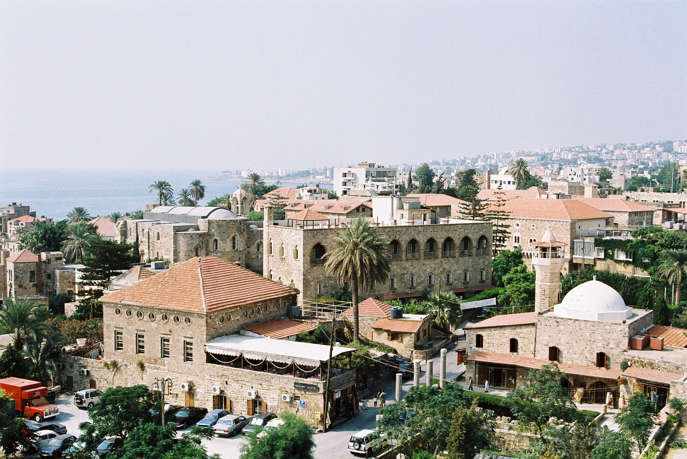

Byblos (Gebal)

- Find Name
- Byblos (Gebal)
- Description
- One of the oldest continuously inhabited cities in the world, the Phoenician city of Gebal, called Byblos by the Greeks (the name behind 'Bible', from papyrus traded through its port). On a promontory about 40 km north of Beirut, it exported cedar to Egypt from the 3rd millennium BC and grew rich on that trade. Its archaeological park holds massive Early Bronze Age walls, the Temple of Baalat Gebal ('Lady of Byblos', c. 2800 BC), the L-shaped temple, the Temple of the Obelisks (c. 1900-1600 BC), a royal necropolis of nine shaft tombs excavated by Pierre Montet in the 1920s, and a Roman theatre. This entry covers the city and its temples; the Ahiram Sarcophagus found in the necropolis has its own entry.
- Historical Period
- Neolithic–Roman
- Evidence Class
- Contextual
- Interpretations
- The identification of Byblos with biblical Gebal is secure. The claim of 'oldest continuously inhabited city' is a popular superlative shared with several cities and is not pressed here; what is certain is Neolithic-to-present occupation. The Ahiram sarcophagus inscription's place as an early Phoenician alphabet text is presented in its own entry and not re-argued here.
- Alternative Names
- Gebal; Gubla; Jbail
- Related Books
- Related Events
- Related People
- Scripture Illuminated
- Biblical Significance
- Byblos is the Gebal of the Bible: its elders caulked Tyre's ships (Ezekiel 27:9), its land is named among the unconquered coasts (Joshua 13:5), and — most importantly for the temple story — Gebalites were among the stonecutters of Solomon's Temple (1 Kings 5:18). The cedar that built the temple in Jerusalem passed through a port like this one, cut by men like these; Byblos is the Phoenician craft world behind 1 Kings 5.
- Artifact Date
- c. 7000 BC - Roman period (city; temples from c. 2800 BC)
- Current Location
- In situ, Byblos, Lebanon
- Date Discovered
- 1920s (Montet, royal necropolis); excavations continue
- Discovery Location
- Byblos (Jbail), Mediterranean coast, Lebanon
- Timeline Era
- Primeval / Patriarchs
Awaiting Review Not yet checked against scholarly sources. Treat its claims as provisional until this entry is reviewed. About verification
Last reviewed: not yet reviewed